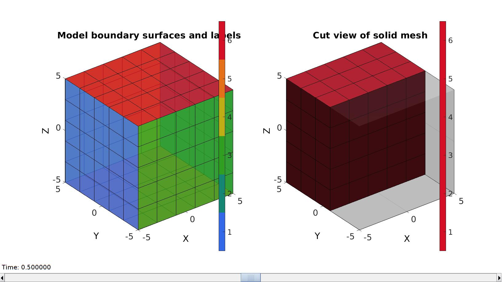
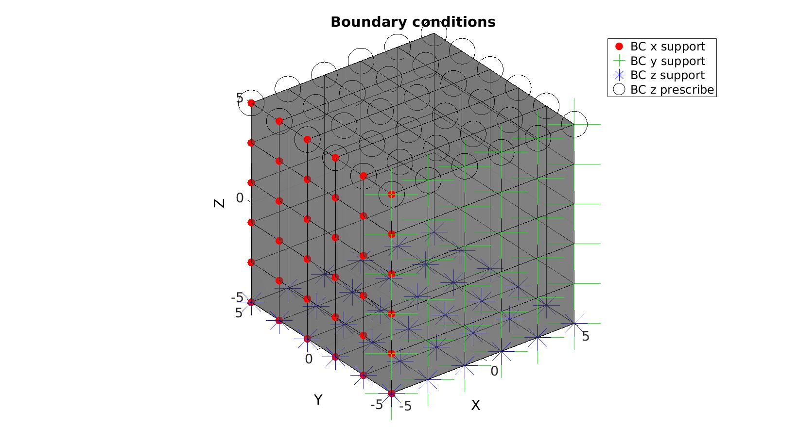

DEMO_abaqus_0001_cube_uniaxial
Below is a demonstration for:
- Building geometry for a cube with hexahedral elements
- Defining the boundary conditions
- Coding the abaqus structure
- Running the model
- Importing and visualizing the displacement and stress results
Contents
Keywords
- abaqus
- uniaxial loading
- compression, tension, compressive, tensile
- displacement control, displacement boundary condition
- hexahedral elements, hex8
- cube, box, rectangular
- static, solid
- hyperelastic, Ogden
- displacement logfile
- stress logfile
clear; close all; clc;
Plot settings
fontSize=20; faceAlpha1=0.8; markerSize=40; lineWidth=3;
Control parameters
% Path names defaultFolder = fileparts(fileparts(mfilename('fullpath'))); savePath=fullfile(defaultFolder,'data','temp'); % Defining file names abaqusInpFileNamePart='tempModel'; abaqusInpFileName=fullfile(savePath,[abaqusInpFileNamePart,'.inp']); %INP file name abaqusDATFileName=fullfile(savePath,[abaqusInpFileNamePart,'.dat']); %DAT file name %Specifying dimensions and number of elements cubeSize=10; sampleWidth=cubeSize; %Width sampleThickness=cubeSize; %Thickness sampleHeight=cubeSize; %Height pointSpacings=2*ones(1,3); %Desired point spacing between nodes numElementsWidth=round(sampleWidth/pointSpacings(1)); %Number of elemens in dir 1 numElementsThickness=round(sampleThickness/pointSpacings(2)); %Number of elemens in dir 2 numElementsHeight=round(sampleHeight/pointSpacings(3)); %Number of elemens in dir 3 %Define applied displacement appliedStrain=0.3; %Linear strain (Only used to compute applied stretch) loadingOption='compression'; % or 'tension' switch loadingOption case 'compression' stretchLoad=1-appliedStrain; %The applied stretch for uniaxial loading case 'tension' stretchLoad=1+appliedStrain; %The applied stretch for uniaxial loading end displacementMagnitude=(stretchLoad*sampleHeight)-sampleHeight; %The displacement magnitude %Material parameter set E_youngs=1e-3; v_poisson=0.4;
Creating model geometry and mesh
A box is created with tri-linear hexahedral (hex8) elements using the hexMeshBox function. The function offers the boundary faces with seperate labels for the top, bottom, left, right, front, and back sides. As such these can be used to define boundary conditions on the exterior.
% Create a box with hexahedral elements cubeDimensions=[sampleWidth sampleThickness sampleHeight]; %Dimensions cubeElementNumbers=[numElementsWidth numElementsThickness numElementsHeight]; %Number of elements outputStructType=2; %A structure compatible with mesh view [meshStruct]=hexMeshBox(cubeDimensions,cubeElementNumbers,outputStructType); %Access elements, nodes, and faces from the structure E=meshStruct.elements; %The elements V=meshStruct.nodes; %The nodes (vertices) Fb=meshStruct.facesBoundary; %The boundary faces Cb=meshStruct.boundaryMarker; %The "colors" or labels for the boundary faces elementMaterialIndices=ones(size(E,1),1); %Element material indices
Plotting model boundary surfaces and a cut view
hFig=cFigure; subplot(1,2,1); hold on; title('Model boundary surfaces and labels','FontSize',fontSize); gpatch(Fb,V,Cb,'k',faceAlpha1); colormap(gjet(6)); icolorbar; axisGeom(gca,fontSize); hs=subplot(1,2,2); hold on; title('Cut view of solid mesh','FontSize',fontSize); optionStruct.hFig=[hFig hs]; meshView(meshStruct,optionStruct); axisGeom(gca,fontSize); drawnow;
Defining the boundary conditions
The visualization of the model boundary shows colors for each side of the cube. These labels can be used to define boundary conditions.
%Define supported node sets logicFace=Cb==1; %Logic for current face set Fr=Fb(logicFace,:); %The current face set bcSupportList_X=unique(Fr(:)); %Node set part of selected face logicFace=Cb==3; %Logic for current face set Fr=Fb(logicFace,:); %The current face set bcSupportList_Y=unique(Fr(:)); %Node set part of selected face logicFace=Cb==5; %Logic for current face set Fr=Fb(logicFace,:); %The current face set bcSupportList_Z=unique(Fr(:)); %Node set part of selected face %Prescribed displacement nodes logicPrescribe=Cb==6; %Logic for current face set Fr=Fb(logicPrescribe,:); %The current face set bcPrescribeList=unique(Fr(:)); %Node set part of selected face
Visualizing boundary conditions. Markers plotted on the semi-transparent model denote the nodes in the various boundary condition lists.
hf=cFigure; title('Boundary conditions','FontSize',fontSize); xlabel('X','FontSize',fontSize); ylabel('Y','FontSize',fontSize); zlabel('Z','FontSize',fontSize); hold on; gpatch(Fb,V,'kw','k',0.5); hl(1)=plotV(V(bcSupportList_X,:),'r.','MarkerSize',markerSize); hl(2)=plotV(V(bcSupportList_Y,:),'g+','MarkerSize',markerSize*2); hl(3)=plotV(V(bcSupportList_Z,:),'b*','MarkerSize',markerSize); hl(4)=plotV(V(bcPrescribeList,:),'ko','MarkerSize',markerSize); legend(hl,{'BC x support','BC y support','BC z support','BC z prescribe'}); axisGeom(gca,fontSize); camlight headlight; drawnow;
Defining the abaqus input structure
See also abaqusStructTemplate and abaqusStruct2inp and the abaqus user manual.
%%--> Heading abaqus_spec.Heading.COMMENT{1}='Job name: ABAQUS inp file creation demo'; abaqus_spec.Heading.COMMENT{2}='Generated by: GIBBON'; %%--> Preprint abaqus_spec.Preprint.ATTR.echo='NO'; abaqus_spec.Preprint.ATTR.model='NO'; abaqus_spec.Preprint.ATTR.history='NO'; abaqus_spec.Preprint.ATTR.contact='NO'; %--> Part % Node nodeIds=(1:1:size(V,1))'; abaqus_spec.Part.COMMENT='This section defines the part geometry in terms of nodes and elements'; abaqus_spec.Part.ATTR.name='Cube'; abaqus_spec.Part.Node={nodeIds,V}; % Element elementIds=(1:1:size(E,1)); abaqus_spec.Part.Element{1}.ATTR.type='C3D8';%'C3D8R'; abaqus_spec.Part.Element{1}.VAL={elementIds(:),E}; % Element sets abaqus_spec.Part.Elset{1}.ATTR.elset='Set-1'; abaqus_spec.Part.Elset{1}.VAL=elementIds; % Sections abaqus_spec.Part.Solid_section.ATTR.elset='Set-1'; abaqus_spec.Part.Solid_section.ATTR.material='Elastic'; %%--> Assembly abaqus_spec.Assembly.ATTR.name='Assembly-1'; abaqus_spec.Assembly.Instance.ATTR.name='Cube-assembly'; abaqus_spec.Assembly.Instance.ATTR.part='Cube'; abaqus_spec.Assembly.Nset{1}.ATTR.nset='Set-1'; abaqus_spec.Assembly.Nset{1}.ATTR.instance='Cube-assembly'; abaqus_spec.Assembly.Nset{1}.VAL=bcSupportList_X(:)'; abaqus_spec.Assembly.Nset{2}.ATTR.nset='Set-2'; abaqus_spec.Assembly.Nset{2}.ATTR.instance='Cube-assembly'; abaqus_spec.Assembly.Nset{2}.VAL=bcSupportList_Y(:)'; abaqus_spec.Assembly.Nset{3}.ATTR.nset='Set-3'; abaqus_spec.Assembly.Nset{3}.ATTR.instance='Cube-assembly'; abaqus_spec.Assembly.Nset{3}.VAL=bcSupportList_Z(:)'; abaqus_spec.Assembly.Nset{4}.ATTR.nset='Set-4'; abaqus_spec.Assembly.Nset{4}.ATTR.instance='Cube-assembly'; abaqus_spec.Assembly.Nset{4}.VAL=bcPrescribeList(:)'; abaqus_spec.Assembly.Nset{5}.ATTR.nset='all'; abaqus_spec.Assembly.Nset{5}.ATTR.instance='Cube-assembly'; abaqus_spec.Assembly.Nset{5}.VAL=1:1:size(V,1); %%--> Material abaqus_spec.Material.ATTR.name='Elastic'; abaqus_spec.Material.Elastic=[E_youngs v_poisson]; %%--> Step abaqus_spec.Step.ATTR.name='Step-1'; abaqus_spec.Step.ATTR.nlgeom='YES'; abaqus_spec.Step.Static=[0.1 1 1e-5 0.1]; % Boundary abaqus_spec.Step.Boundary{1}.VAL={'Set-1',[1,1]}; abaqus_spec.Step.Boundary{2}.VAL={'Set-2',[2,2]}; abaqus_spec.Step.Boundary{3}.VAL={'Set-3',[3,3]}; abaqus_spec.Step.Boundary{4}.VAL={'Set-4',[3,3],displacementMagnitude}; %Output abaqus_spec.Step.Restart.ATTR.write=''; abaqus_spec.Step.Restart.ATTR.frequency=0; abaqus_spec.Step.Output{1}.ATTR.field=''; abaqus_spec.Step.Output{1}.ATTR.variable='PRESELECT'; abaqus_spec.Step.Output{2}.ATTR.history=''; abaqus_spec.Step.Output{2}.ATTR.variable='PRESELECT'; %Nodal coordinates abaqus_spec.Step.Node_print{1}.ATTR.nset='all'; abaqus_spec.Step.Node_print{1}.ATTR.frequency = 1; abaqus_spec.Step.Node_print{1}.VAL='COORD'; abaqus_spec.Step.El_print{1}.VAL='S'; abaqus_spec.Step.El_print{2}.VAL='E';
abaqusStruct2inp(abaqus_spec,abaqusInpFileName);
%textView(abaqusInpFileName);
Run the job using Abaqus
lockFileName=fullfile(savePath,[abaqusInpFileNamePart,'.lck']); if exist(lockFileName,'file') warning('Lockfile found and deleted') delete(lockFileName); end
oldPath=pwd; %Get current working directory cd(savePath); %Set new working directory to match save patch abaqusPath='abaqus';%'/usr/bin/abaqus'; %Abaqus excute command or path runFlag=system([abaqusPath,' inp="',abaqusInpFileName,'" job=',abaqusInpFileNamePart,' interactive ask_delete=OFF']); cd(oldPath); %Restore working directory
/bin/bash: line 1: abaqus: command not found
Import and visualize abaqus results
Importing the abaqus .dat file
[abaqusData]=importAbaqusDat(abaqusDATFileName);
Error using textscan Invalid file identifier. Use fopen to generate a valid file identifier. Error in txtfile2cell (line 16) T=textscan(fid,'%s','delimiter', '\n','Whitespace',''); Error in importAbaqusDat (line 61) T=txtfile2cell(fileName); Error in DEMO_abaqus_0001_cube_uniaxial (line 270) [abaqusData]=importAbaqusDat(abaqusDATFileName);
Get element data
E_effectiveStress=zeros(size(E,1),numel(abaqusData.STEP.INCREMENT)+1); E_effectiveStrain=zeros(size(E,1),numel(abaqusData.STEP.INCREMENT)+1); for q=1:1:numel(abaqusData.STEP.INCREMENT) for d=1:1:2 dataSet=abaqusData.STEP.INCREMENT(q).elementOutput(d); %Get data structure switch d case 1 % Get element data across all 8 integration points D11_PT=reshape(dataSet.data.S11,8,size(E,1))'; D22_PT=reshape(dataSet.data.S22,8,size(E,1))'; D33_PT=reshape(dataSet.data.S33,8,size(E,1))'; D12_PT=reshape(dataSet.data.S12,8,size(E,1))'; D13_PT=reshape(dataSet.data.S13,8,size(E,1))'; D23_PT=reshape(dataSet.data.S23,8,size(E,1))'; case 2 % Get element data across all 8 integration points D11_PT=reshape(dataSet.data.E11,8,size(E,1))'; D22_PT=reshape(dataSet.data.E22,8,size(E,1))'; D33_PT=reshape(dataSet.data.E33,8,size(E,1))'; D12_PT=reshape(dataSet.data.E12,8,size(E,1))'; D13_PT=reshape(dataSet.data.E13,8,size(E,1))'; D23_PT=reshape(dataSet.data.E23,8,size(E,1))'; end % Get mean element metrics D11=mean(D11_PT,2); D22=mean(D22_PT,2); D33=mean(D33_PT,2); D12=mean(D12_PT,2); D13=mean(D13_PT,2); D23=mean(D23_PT,2); % Calculate effective (Von Mises) metrics switch d case 1 E_effectiveStress(:,q+1)=(1/sqrt(2)).*sqrt((D11-D22).^2+(D11-D33).^2+(D33-D11).^2+6*D12.^2+6*D23.^2+6*D13.^2); case 2 E_effectiveStrain(:,q+1)=(1/sqrt(2)).*sqrt((D11-D22).^2+(D11-D33).^2+(D33-D11).^2+6*D12.^2+6*D23.^2+6*D13.^2); end end end % diff(E_effectiveStress,1,2)./diff(E_effectiveStrain,1,2)
Plotting the simulated results using anim8 to visualize and animate deformations
%Getting final nodal coordinates V_def=[abaqusData.STEP(1).INCREMENT(end).nodeOutput(1).data.COOR1... abaqusData.STEP(1).INCREMENT(end).nodeOutput(1).data.COOR2... abaqusData.STEP(1).INCREMENT(end).nodeOutput(1).data.COOR3]; U=V_def-V; %Displacements colorDataVertices=sqrt(sum(U.^2,2)); %Displacement magnitude data for coloring timeVec=[0 abaqusData.STEP(1).INCREMENT(:).TOTAL_TIME_COMPLETED]; % Get limits for plotting minV=min([V;V_def],[],1); %Minima maxV=max([V;V_def],[],1); %Maxima % Create basic view and store graphics handle to initiate animation hf=cFigure; %Open figure gtitle([abaqusInpFileNamePart,': Displacement data. Press play to animate']); hp=gpatch(Fb,V_def,colorDataVertices,'k',1); %Add graphics object to animate gpatch(Fb,V,0.5*ones(1,3),'k',0.25); %A static graphics object axisGeom(gca,fontSize); colormap(gjet(250)); colorbar; caxis([0 max(colorDataVertices)]); axis([minV(1) maxV(1) minV(2) maxV(2) minV(3) maxV(3)]); %Set axis limits statically view(130,25); %Set view direction camlight headlight; % Set up animation features animStruct.Time=timeVec; %The time vector for qt=1:1:numel(timeVec) %Loop over time increments if qt>1 V_def=[abaqusData.STEP(1).INCREMENT(qt-1).nodeOutput.data.COOR1... abaqusData.STEP(1).INCREMENT(qt-1).nodeOutput.data.COOR2... abaqusData.STEP(1).INCREMENT(qt-1).nodeOutput.data.COOR3]; else V_def=V; end U=V_def-V; %Displacements colorDataVertices=sqrt(sum(U(:,3).^2,2)); %New color data %Set entries in animation structure animStruct.Handles{qt}=[hp hp]; %Handles of objects to animate animStruct.Props{qt}={'Vertices','CData'}; %Properties of objects to animate animStruct.Set{qt}={V_def,colorDataVertices}; %Property values for to set in order to animate end anim8(hf,animStruct); %Initiate animation feature drawnow;
Plotting the simulated results using anim8 to visualize and animate deformations
%Getting final nodal coordinates V_def=[abaqusData.STEP(1).INCREMENT(end).nodeOutput.data.COOR1... abaqusData.STEP(1).INCREMENT(end).nodeOutput.data.COOR2... abaqusData.STEP(1).INCREMENT(end).nodeOutput.data.COOR3]; U=V_def-V; %Displacements [FE,C_FE_effectiveStress]=element2patch(E,E_effectiveStress(:,end),'hex8'); [indBoundary]=tesBoundary(FE,V); FEb=FE(indBoundary,:); colorDataFaces=C_FE_effectiveStress(indBoundary); timeVec=[0 abaqusData.STEP(1).INCREMENT(:).TOTAL_TIME_COMPLETED]; % Get limits for plotting minV=min([V;V_def],[],1); %Minima maxV=max([V;V_def],[],1); %Maxima % Create basic view and store graphics handle to initiate animation hf=cFigure; %Open figure gtitle([abaqusInpFileNamePart,': Effective stress data. Press play to animate']); hp=gpatch(FEb,V_def,colorDataFaces,'k',1); %Add graphics object to animate gpatch(FEb,V,0.5*ones(1,3),'k',0.25); %A static graphics object axisGeom(gca,fontSize); colormap(gjet(250)); colorbar; caxis([0 max(E_effectiveStress(:))]); axis([minV(1) maxV(1) minV(2) maxV(2) minV(3) maxV(3)]); %Set axis limits statically view(130,25); %Set view direction camlight headlight; % Set up animation features animStruct.Time=timeVec; %The time vector for qt=1:1:numel(timeVec) %Loop over time increments if qt>1 V_def=[abaqusData.STEP(1).INCREMENT(qt-1).nodeOutput.data.COOR1... abaqusData.STEP(1).INCREMENT(qt-1).nodeOutput.data.COOR2... abaqusData.STEP(1).INCREMENT(qt-1).nodeOutput.data.COOR3]; else V_def=V; end U=V_def-V; %Displacements [~,C_FE_effectiveStress]=element2patch(E,E_effectiveStress(:,qt),'hex8'); colorDataFaces=C_FE_effectiveStress(indBoundary); %New color data %Set entries in animation structure animStruct.Handles{qt}=[hp hp]; %Handles of objects to animate animStruct.Props{qt}={'Vertices','CData'}; %Properties of objects to animate animStruct.Set{qt}={V_def,colorDataFaces}; %Property values for to set in order to animate end anim8(hf,animStruct); %Initiate animation feature drawnow;

GIBBON www.gibboncode.org
Kevin Mattheus Moerman, gibbon.toolbox@gmail.com
GIBBON footer text
License: https://github.com/gibbonCode/GIBBON/blob/master/LICENSE
GIBBON: The Geometry and Image-based Bioengineering add-On. A toolbox for image segmentation, image-based modeling, meshing, and finite element analysis.
Copyright (C) 2006-2022 Kevin Mattheus Moerman and the GIBBON contributors
This program is free software: you can redistribute it and/or modify it under the terms of the GNU General Public License as published by the Free Software Foundation, either version 3 of the License, or (at your option) any later version.
This program is distributed in the hope that it will be useful, but WITHOUT ANY WARRANTY; without even the implied warranty of MERCHANTABILITY or FITNESS FOR A PARTICULAR PURPOSE. See the GNU General Public License for more details.
You should have received a copy of the GNU General Public License along with this program. If not, see http://www.gnu.org/licenses/.